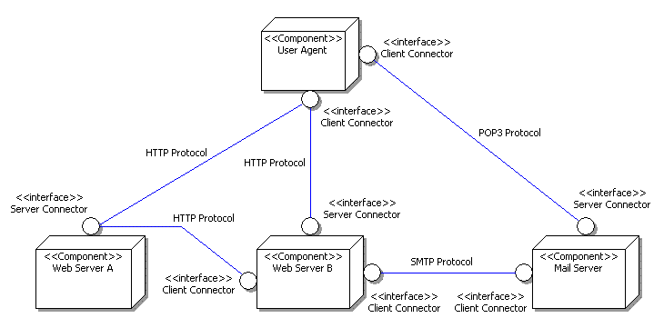
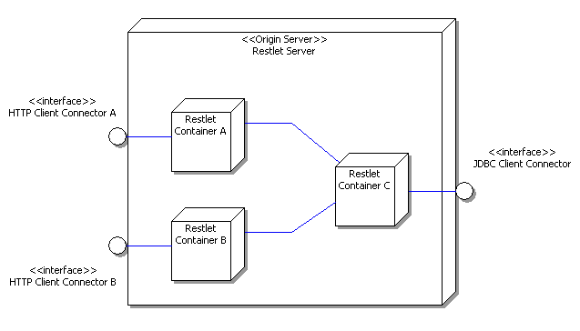

The Restlet framework is composed of two parts. First, there is the "Restlet API", a neutral API supporting the concepts of REST and a mechanism called Restlet facilitating the handling of REST calls. This API must be supported by a "Restlet Implementation" before it can be effectively used. Multiple providers could provide an implementation (open source projects, commercial products).
This separation between the API and the implementation is similar to the one between the Servlet API and your preferred Web container or Servlet engine, or between the JDBC API and your JDBC driver.
Currently, only the Reference Implementation (RI) is available, the "Noelios Restlet Engine" (NRE), which is by the way an open source project. When you download the Restlet framework, the API and the NRE come bundled together, ready to be used. You only need to add the following line before working with the framework:
com.noelios.restlet.Engine.register();
Internally, the NRE registers itself as the current implementation by calling back org.restlet.Manager.registerFactory(), passing a new instance of itself as a parameter.
As we mentionned in the introduction paper, the Restlet framework is at the same time a client and server framework. For example, NRE can easily work with remote resources using its HTTP client connector. A connector in REST, is a sofware component that enables the communication between resources, typically by implementing one side of a network protocol. Here we will get the representation of an existing resource and output it in the JVM console:
HttpClient client = new HttpClient("My Web client");
client.doGet("http://www.restlet.org").getOutput().write(System.out);
Note that the example above uses a simplified way to issue calls via the HttpClient. A more flexible way is to create a new REST call and to ask the HTTP client to handle it. The Manager class also has a factory role ; it is a neutral access point to the registered Restlet implementation. The example below could be a good basis to set some preferences in your call, like the languages or media types you prefer to receive as a response:
// Prepare the REST call
UniformCall call = Manager.createCall();
Reference uri = Manager.createReference("http://www.restlet.org");
call.setResourceUri(uri);
call.setMethod(Methods.GET);
// Ask to the HTTP client connector to handle the call
HttpClient client = new HttpClient("My Web client");
client.handle(call);
// Output the result representation on the JVM console
Representation output = call.getOutput();
output.write(System.out);
Now, we want to see how the Restlet framework can listen to client requests and reply to them. We will use the NRE HTTP server connector (supported by Mortbay's Jetty HTTP listener) and return a simple string representation "Hello World!" as plain text.
// Creating a minimal handler returning "Hello World"
UniformInterface handler = new UniformInterface()
{
public void handle(UniformCall call)
{
call.setOutput(new StringRepresentation("Hello World!", MediaTypes.TEXT_PLAIN));
}
};
// Create the HTTP server and listen on port 8182
new JettyServer("My Web server", 8182, handler).start();
If you run this code and launch your server, you can open a Web browser and hit the http://localhost:8182. Actually, any URI will work, try also http://localhost:8182/test/tutorial. The handler that we created is very primitive because it only uses the pure REST part of the Restlet framework. We will see next, how to take advantage of the Restlets and Maplets components.
Let's step back a little bit and consider a typical web architecture from a REST point of view. In the diagram below, circles represent the connector that enable the communication between components which are represented by the boxes. The blue links represents the network communication using a particular protocol (HTTP, SMTP, etc.).

Note that the same component can have any number of client and server connectors attached to it. Web Server B, for example, has both a server connector to respond to requests from the User Agent component, and client connectors to send requests to the Database Server, the Mail Server and the Web Server A.
In addition to supporting the standard REST software architecture elements as presented before, the Restlet framework also provides a set of components that facilitate the handling of REST call. The goal is to provide a powerful and RESTful alternative to existing Servlet frameworks.
First, we can use Restlets which are simple call handlers living inside a parent restlet container. Restlets are selected when the URI of the requested resource matches a given URI pattern. Now, let's see how a restlet can reply to client requests. We will attach a restlet (myRestlet) to a parent restlet container (myContainer). In order for a Web client to invoke the restlet, the following URI will have to be entered: http://localhost:8182/tutorial.
// Create a new restlet container
RestletContainer myContainer = new DefaultRestletContainer("My container");
// Create the HTTP server connector, then add it as a server connector
// to the restlet container. Note that the container is the call handler.
JettyServer httpServer = new JettyServer("My connector", 8182, myContainer);
myContainer.addServer(httpServer);
// Create a new restlet that will display some path information.
// Note that restlets are call handlers similar to servlets.
Restlet myRestlet = new AbstractRestlet(myContainer)
{
public void handle(RestletCall call) throws RestletException
{
// Print the requested URI path
String output = "Resource path = " + call.getPath(0, false) + '\n' +
"Restlet path = " + call.getPath(1, false);
call.setOutput(new StringRepresentation(output, MediaTypes.TEXT_PLAIN));
}
};
// Then attach it to the container. Note that the restlet will be called
// only if the beginning of the requested URI matches the given pattern.
myContainer.attach("http://localhost:8182/tutorial", myRestlet);
// Now, let's start the container! Note that the HTTP server connector is
// also automatically started.
myContainer.start();
In addition to Restlets, we can take advantage of Maplets. They are specialized Restlets that can have other Restlets attached to them and that can automatically delegate calls to them based on a URI pattern. Note that Restlet containers are Maplets themselves.
// Create a new restlet container
RestletContainer myContainer = new DefaultRestletContainer("My container");
// Create the HTTP server connector, then add it as a server connector
// to the restlet container. Note that the container is the call handler.
JettyServer httpServer = new JettyServer("My connector", 8182, myContainer);
myContainer.addServer(httpServer);
// Create a new restlet that will display some path information.
// Note that restlets are call handlers similar to servlets.
Restlet myRestlet = new AbstractRestlet(myContainer)
{
public void handle(RestletCall call) throws RestletException
{
// Print the requested URI path
String output = "Resource path = " + call.getPath(0, false) + '\n' +
"Restlet path = " + call.getPath(1, false);
call.setOutput(new StringRepresentation(output, MediaTypes.TEXT_PLAIN));
}
};
// Create a new maplet and attach the restlet to it
// Note that the mapping string is a full Java 5.0 pattern (see java.util.regex.Pattern class).
Maplet myMaplet = new DefaultMaplet(myContainer);
myMaplet.attach("/tutorial$", myRestlet);
// Then attach the maplet to the container.
// Note that virtual hosting can be very easily supported if you need it,
// just attach multiple maplets, one for each virtual server.
myContainer.attach("http://localhost:8182", myMaplet);
// Now, let's start the container! Note that the HTTP server connector is
// also automatically started.
myContainer.start();
Note, that the myRestlet will reply only to requests to http://localhost:8182/tutorial. This is due to the usage of the '$' character at the end of the pattern, meaning that no other character can be left after. More powerful patterns can be specified as needed, but the Maplets will automatically take care of the URI matching and parsing.
Now, if your web application is becoming more complex, you may want to use multiple Restlet containers, all living within a single Restlet server. For example, this is very useful if you want to separate you domain resources (managed by container C) from your web server resources (managed by container A) and your web services resources (managed by container B):

Also, note that servers and containers are REST components themselves. This means that if your Restlet server has only one container, you can simply use it as your origin server and attach connectors normally.
Do you having a part of your web application that serves static pages, like Javadocs? Well, no need to setup an Apache server just for that, the Noelios Restlet Engine provides a dedicated Restlet. See how simple it is to use it. Note, that no external configuration file is needed:
// Create a new restlet container
RestletContainer myContainer = new DefaultRestletContainer("My container");
// Create the HTTP server connector, then add it as a server connector
// to the restlet container. Note that the container is the call handler.
JettyServer httpServer = new JettyServer("My connector", 8182, myContainer);
myContainer.addServer(httpServer);
// Create a directory restlet able to return a deep hierarchy of Web files
// (HTML pages, CSS stylesheets or GIF images) from a local directory.
DirectoryRestlet dirRestlet = new DirectoryRestlet(myContainer, "D:/Restlet/www/docs/api/", true, "index");
dirRestlet.addExtension("html", MediaTypes.TEXT_HTML);
dirRestlet.addExtension("css", MediaTypes.TEXT_CSS);
dirRestlet.addExtension("gif", MediaTypes.IMAGE_GIF);
// Then attach the maplet to the container.
// Note that virtual hosting can be very easily supported if you need it,
// just attach multiple maplets, one for each virtual server.
myContainer.attach("http://localhost:8182/", dirRestlet);
// Now, let's start the container! Note that the HTTP server connector is
// also automatically started.
myContainer.start();
That's all for now. Feel free to test the examples of this tutorial. The full source code is available in the distribution.